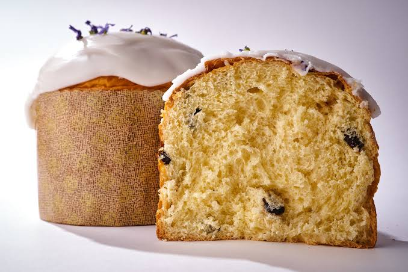

Кулич пасхальный
Категория: Выпечка на заказ
Цена: 1200 ₽
Кули́ч — пасхальный хлеб в русской кухне. У восточных славян праздничный хлеб был круглым и высоким, сверху на нём делались украшения из теста.

Характеристики
| Энергетическая ценность на 100 г | |
|---|---|
| Белки | 8 |
| Жиры | 10 |
| Углеводы | 50 |
| Килокалории | 340 |
Состав:
Мука пшеничная, молоко и сливки, дрожжи, сливочное масло, яйца куриные, изюм, сахар и щепотка соли. Сладкая часть состав: секретно.
Преимущества
- Наш кулич имеет сочный, влажный и тающий во рту мякиш за счет большого количества желтков и натурального сливочного масла.
- Пышное дрожжевое тесто созревает медленно, поэтому выпечка получается невероятно нежной и ароматной.
- Готовится с любовью.